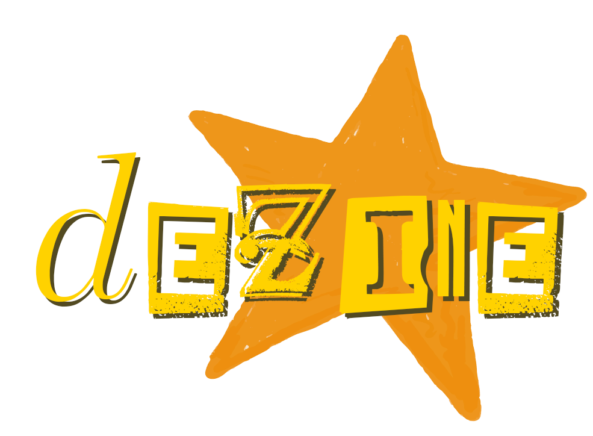
Editorial Fanzine (Experimental)
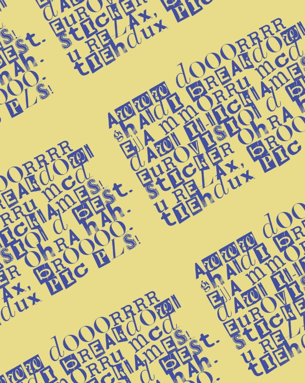

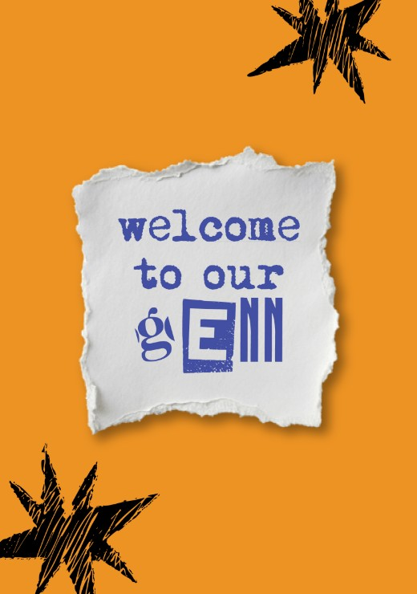
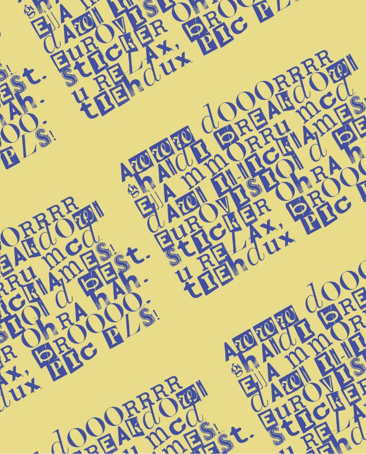
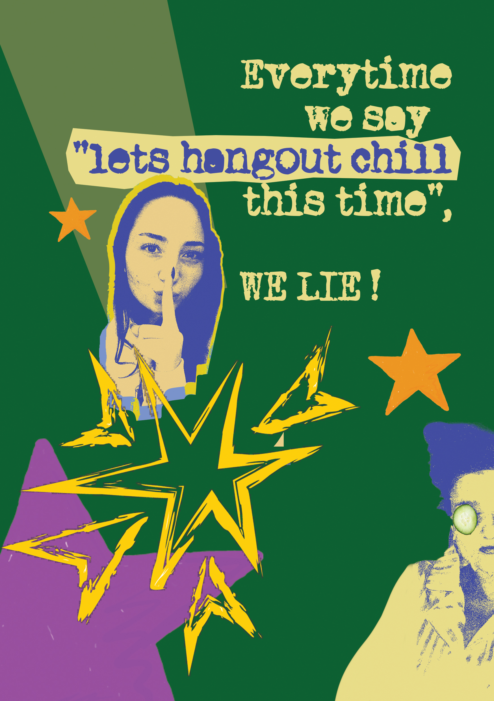
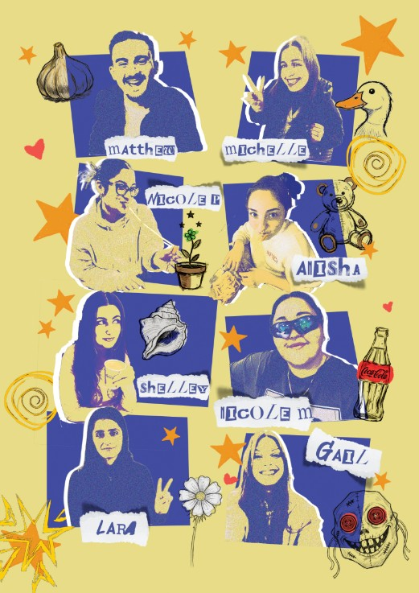
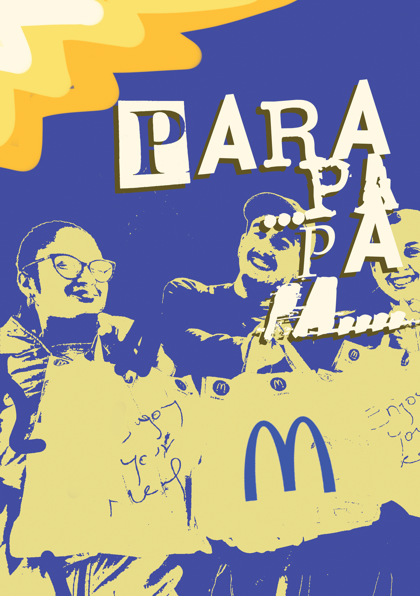
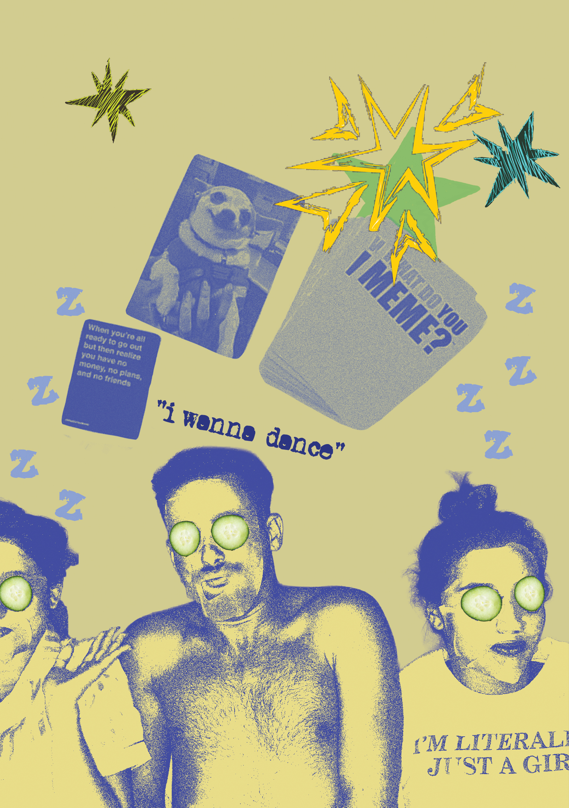
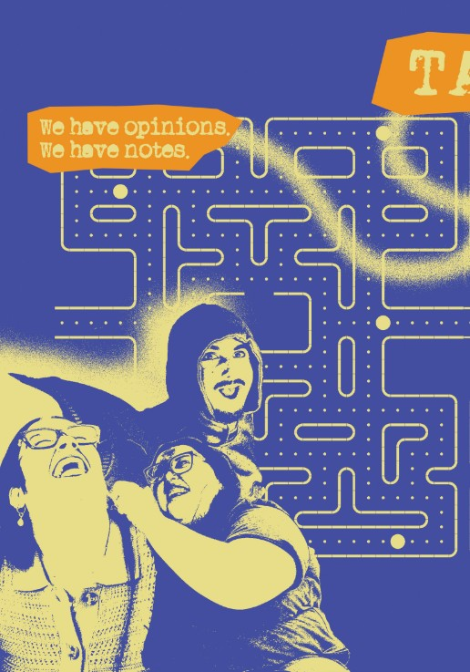
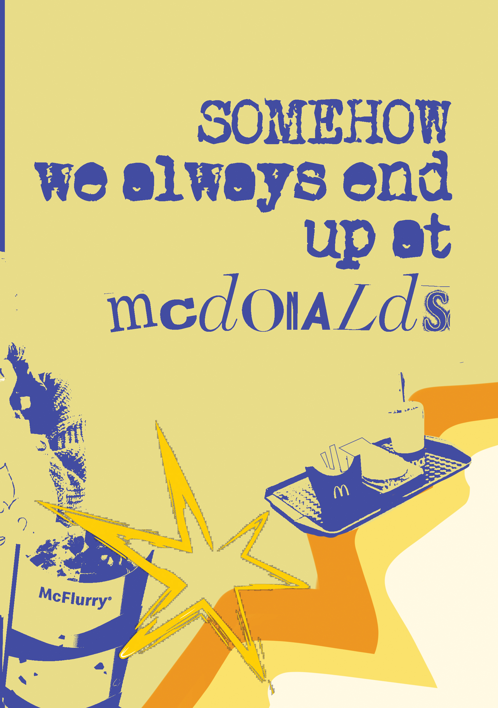
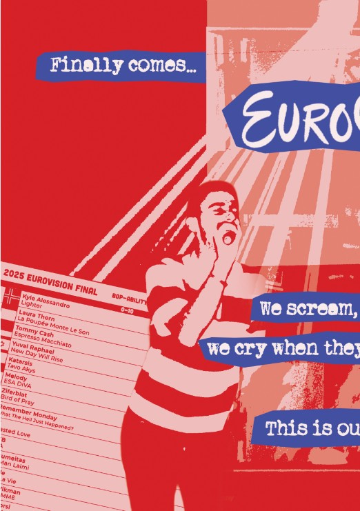
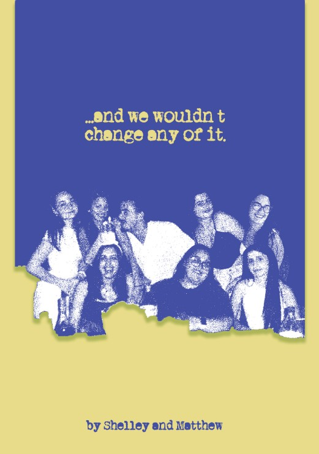
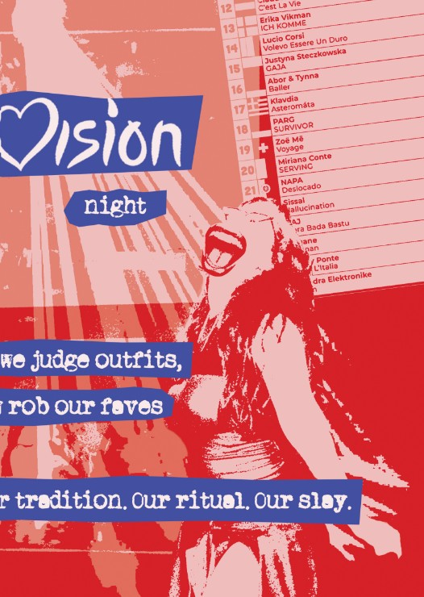
< PRESS HERE
Presented here is one of my most cherished and dedicated works to date. Although it
began as a school
assignment,
I approached the project with a high level of commitment and professionalism. I organised and
planned
photoshoots involving several models, carefully selecting specific locations that complemented each
theme I
intended to convey. Every detail—from planning to execution—was carried out with seriousness and
purpose. (Note:
the images of celebrities featured in the magazine are not my own.)
The concept behind the project was to design a magazine that offers a fresh and unique take on music
categorisation. Rather than presenting music in a standard format, I chose to group songs by
emotional
theme—such as happiness, darkness, love, and classic styles. Each category was visually represented
by a
specific colour, selected to match the tone and mood of the genre, creating a distinct visual
identity
for each
section. In addition to listing the top 20 songs under each mood, the magazine also featured curated
articles
about artists who reflect the theme of each category.
My research involved analysing how established magazines—such as Vogue, Billboard, and Rolling
Stone—present
information in engaging and aesthetically compelling ways. I observed that these publications often
integrate
brand advertisements throughout their pages to promote collections and merchandise, and I considered
this aspect
in my own layout decisions.
The primary goal of my magazine was to redefine how music can be promoted and explored. Instead of
focusing
solely on individual artists or displaying generic top 10 global charts, I wanted to create a more
personal and
accessible experience. By organising music by emotional themes and offering a rich, visually-driven
narrative,
the magazine invites readers to discover new music that aligns with their mood or taste—whether it's
a
song
they’ve never heard before or one they’ve long enjoyed but never knew the title of.